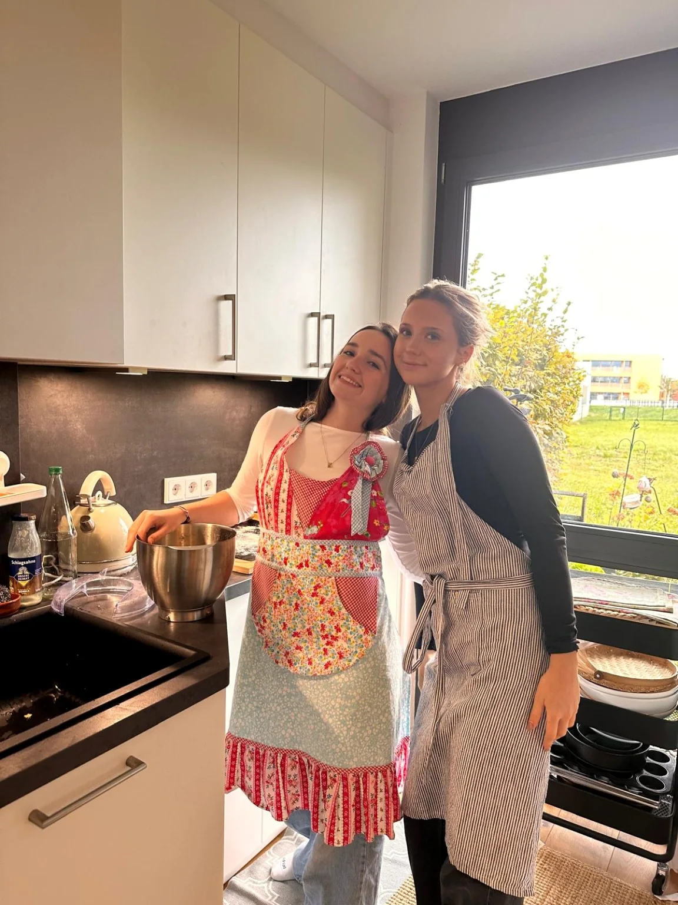
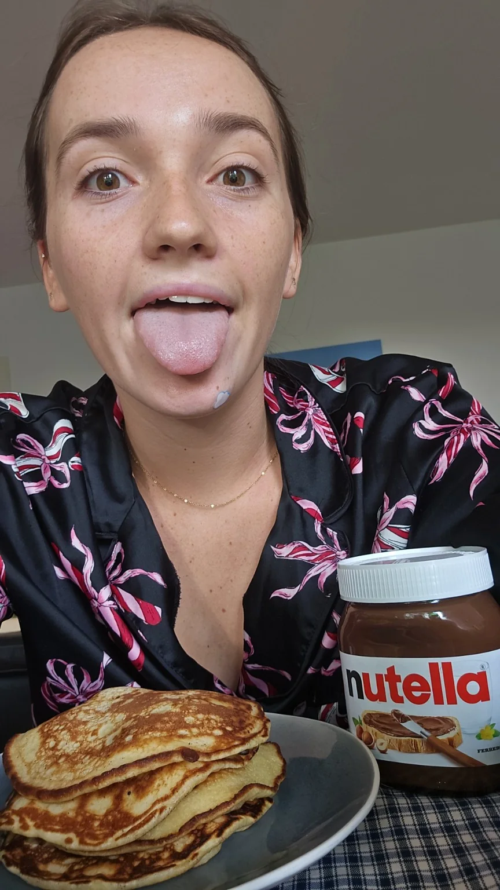
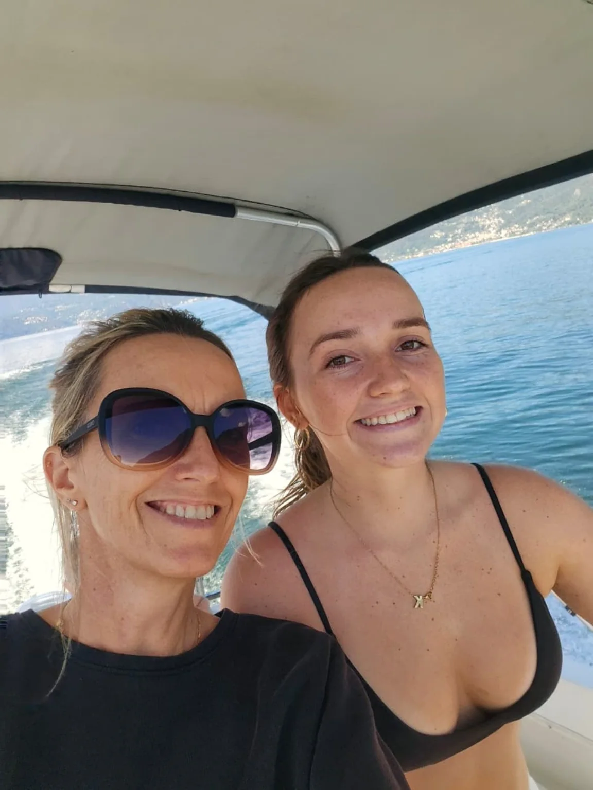
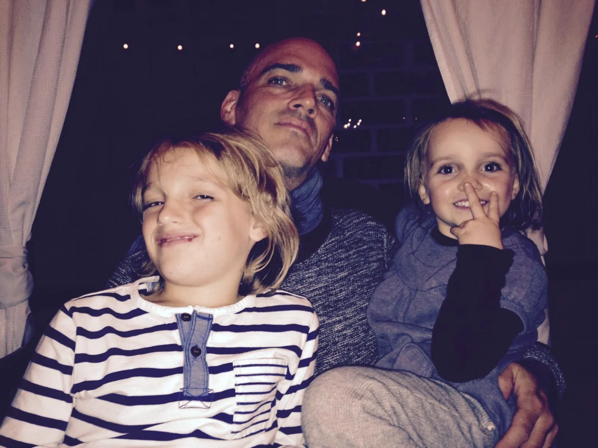

WEDNESDAY · OCT 28
Arrival & Wander
Fly from Milan, settle in, then explore the Gothic Quarter or El Born at your own pace.
A relaxed first afternoon
Explore ideas ↗KIARA XAMANA WEBER
BARCELONA · 28–30 OCTOBER 2026
Three days. One big birthday.
Barcelona.
Three little chapters in a city made for wandering.

WEDNESDAY · OCT 28
Fly from Milan, settle in, then explore the Gothic Quarter or El Born at your own pace.
A relaxed first afternoon
Explore ideas ↗
THURSDAY · OCT 29
Choose an iconic Gaudí experience, browse boutiques, and make room for a special birthday dinner.
The birthday chapter ✦
Choose the vibe ↗
FRIDAY · OCT 30
Enjoy a final café stop or walk, collect your bags, and head to the airport with a comfortable buffer.
A little more Barcelona
Travel details ↗If you are looking for… choose the mood that feels right.
Wander the Gothic Quarter’s lanes, small squares, and cathedral surroundings.
For curious wanderersVisit Casa Batlló for a vivid, design-forward Gaudí experience.
For art & photosOfficial visit info ↗Choose Sagrada Família for monumental architecture and extraordinary interiors.
For the big wowOfficial visitor info ↗Browse Passeig de Gràcia or the independent boutiques around El Born.
For fashion & findsWalk through Arc de Triomf and Parc de la Ciutadella if the weather cooperates.
For fresh airSave time for a favorite dessert, a café stop, and a few photos together.

THE BEST PART
A birthday trip made of the moments in between.
The important bits, all in one place.
WEDNESDAY · OCT 28, 2026
Vueling VY6041
Departure10:10
Arrival11:55
FRIDAY · OCT 30, 2026
Vueling VY6048
Departure15:55
Arrival17:30

Gothic Quarter
Barcelona, Spain
A little forecast goes a long way.
BARCELONA · OCT 28–30
Loading the latest forecast…
Bring comfortable walking shoes and a light layer. Check again before departure as forecasts can change.
Forecast supplied by Open-Meteo. Updated when this page loads; availability and forecast range depend on the provider. If the dates are too far ahead, check again closer to departure.